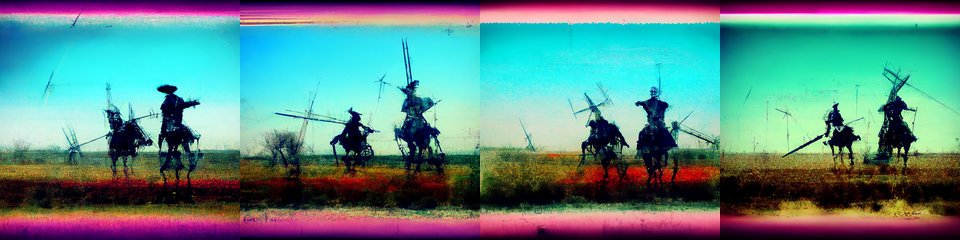

← Async Art — living works · all collections
by Hulki Okan Tabak · Async Art Master #10228 · four-phase · time rule: UTC
Updates four times a day to reflect sunrise / day / sunset / night cycles.

Sunrise 06:00–06:59 · Day 07:00–17:59 · Sunset 18:00–18:59 · Night 19:00–05:59 (UTC)
The full-size files live on IPFS; each is linked on three public gateways, in the order to try them (gateway.pinata.cloud, ipfs.io, dweb.link). Every line says what our own check found: 5 we keep this file pinned, 1 our own copy, pinned here and verified on upload.
QmPTyBH7jc6T8H… gateway.pinata.cloud · ipfs.io · dweb.link — we keep this file pinned, checked 2026-09-23 09:13QmRPYbDAY58pqq… gateway.pinata.cloud · ipfs.io · dweb.link — we keep this file pinned, checked 2026-09-23 09:13QmVQJ8SdTFkNVy… gateway.pinata.cloud · ipfs.io · dweb.link — we keep this file pinned, checked 2026-09-23 09:13QmPK7djD8wBghH… gateway.pinata.cloud · ipfs.io · dweb.link — we keep this file pinned, checked 2026-09-23 09:13bafybeifwju4qw… gateway.pinata.cloud · ipfs.io · dweb.link — our own copy, pinned here and verified on upload, checked 2026-09-22QmWEv4XTydF6zt… gateway.pinata.cloud · ipfs.io · dweb.link — we keep this file pinned, checked 2026-09-23 09:13QmRPYbDAY58pqq… gateway.pinata.cloud · ipfs.io · dweb.link — we keep this file pinned, checked 2026-09-23 09:13QmRPYbDAY58pqq… gateway.pinata.cloud · ipfs.io · dweb.link — we keep this file pinned, checked 2026-09-23 09:13QmPK7djD8wBghH… gateway.pinata.cloud · ipfs.io · dweb.link — we keep this file pinned, checked 2026-09-23 09:13QmPTyBH7jc6T8H… gateway.pinata.cloud · ipfs.io · dweb.link — we keep this file pinned, checked 2026-09-23 09:13QmVQJ8SdTFkNVy… gateway.pinata.cloud · ipfs.io · dweb.link — we keep this file pinned, checked 2026-09-23 09:13Don Quixote: Jousting for Delusional Glory by Hulki Okan Tabak, minted 1/1 on Async Art, 2022 4 artworks in a daily cycle.. ... Don Quixote project is a highly personal interpretation of the hero and his world. Various photographic and AI tools are used to create, manipulate and recreate the images. The story will be numbered for all of us to track down what we hold essentially. Beyond ease of use, the numbers are not sequential. Each image is independent but some images will be interdependent parts of smaller stories which I will mention. I would also mint some editions outside of Manifold. Note that editions of this project could be 1/1s or multi editions. The mints on Async Art will…
async.art · OpenSea · Etherscan
Generated archive pages. Content identifiers point to the public IPFS network.